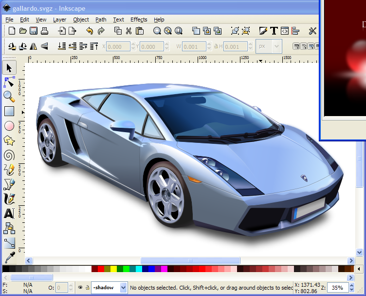
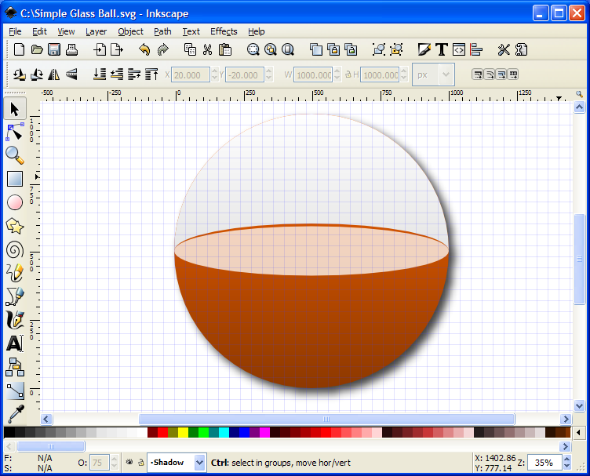

Vector graphics editor
| Inkscape 0.92.1 Vector graphics editor |
Inkscape is an easy to use vector graphics editor that uses the Scalable Vector Graphics (SVG) file format. Supported SVG features include shapes, paths, text, markers, clones, alpha blending, transforms, gradients, patterns, and grouping. Inkscape also supports Creative Commons meta-data, node editing, layers, complex path operations, bitmap tracing, text-on-path, flowed text, direct XML editing, and more. It imports formats such as JPEG, PNG, TIFF, and others and exports PNG as well as multiple vector-based formats. You can use Inkscape to create diagrams for reports and projects. Because Inkscape uses "vector" rather than "raster" graphics editing (which is mostly used by the GIMP), you can always go back later to reposition items and change font sizes. More importantly you won't end up with blocky graphics because with vector graphics you can enlarge the images to any size without losing quality. |
  |
{kind=link}
{kind=link}